This is the page where you can follow instructions on how to use the Map Editor.
If you encounter glitches or other problems in the Map Editor, some of your answers can be found in the Q&A Page.

This is the page where you can follow instructions on how to use the Map Editor.
If you encounter glitches or other problems in the Map Editor, some of your answers can be found in the Q&A Page.
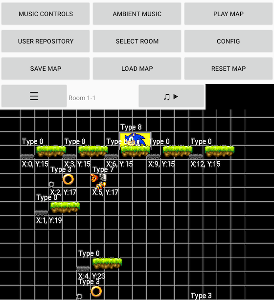
FIRST STEPS:
The Map Editor is a feature that allows you to check the different game maps and even modify them to test them out!
When entering the Map Editor, you will see the top layout of the first stage. You can check the stage layout by sliding or zooming the stage canvas.
MENUS & OPTIONS:
At the top of the screen is a selection of menus and options.
You can find the different usage of each option by checking the different sections of this page.
The stage map is indicated by its Room number.
If you want to get a higher view of the canvas, you can hide the menu section by pressing the ☰ icon. Press this icon again to display the menu section back.
The black/colored box on the top-right side of the screen is actually an option. It allows you to change the color of the stage canvas.
OPTION TYPES:
The options are explained in the different sections of the page.
Here are the sections listing the options:
DESCRIPTION:
In the Map Editor, the stage layouts are represented by objects.
Each object has its type number and coordinates.
The coordinates are represented by the X and Y positions. The X position can go from between 0 to 15 from left to right, whereas the Y position can go from from 0 to 65535 from top to bottom.
When selecting an empty space, you will be granted with a list of object types. You can also select a placed object to change its type or remove it.
Some object placements are determined by gray sprites next to the visual object sprite to illustrate the accurate in-game object postions.
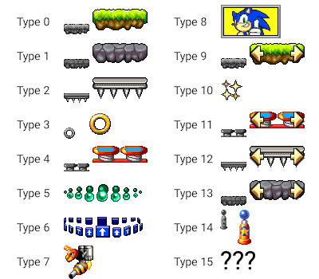
OBJECT TYPES LIST:
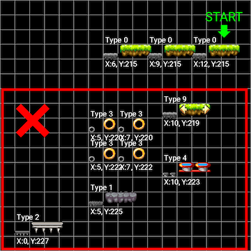
STARTING POINT:
The starting point of the stage is determined by the lowest basic platform placed (Type 0).
Any other objects placed below won't be present in the stage.
If you place multiple basic platforms at the lowest, the starting point will be the platform placed to the right. There is no other way to change the starting point position.
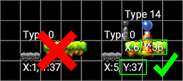
CHECKPOINTS:
GOAL POST:
The goal post is a necessary object type to clear a stage. It serves multiple purpose depending on the stage.
In ACT 1 and 2 stages, the goal post represents the end of the stage. Reach the height of the goal post to clear the stage.
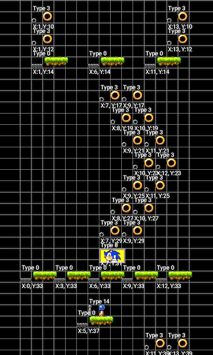
In ACT 3 stages, the goal post makes you ascend until a certain height. The goal post is necessary to make Dr. Eggman appear. Dr. Eggman is located at the highest position of the stage. He must be defeated to clear the stage.
You can add multiple goal posts to make you ascend even more, but doing so will make Dr. Eggman behave faster each time.
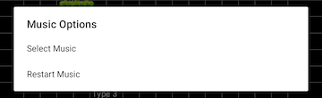
MUSIC CONTROLS:
The MUSIC CONTROLS menu is where you can select a custom music for your stages.
If you select Select Music, you will be granted with a library of soundtracks from various Sonic games.
If you want to replay a music track, you can do so by selecting Restart Music.
HOW TO USE CUSTOM MUSIC IN MAPS:
First, you need to select a music by going through the library of soundtracks.
Select your preferred music track in the soundtracks.
After selecting a music track, the music will play in the background. Though this may take a few seconds, as the music tracks are stored in the Internet Archive.
Finally, to use the selected music to be played in your stage, you need to check the Custom Music option in the CONFIG menu.
OTHER MUSIC OPTIONS:
The AMBIENT MUSIC option allows you to listen to music to give an ambient while using the Map Editor.
You can also pause and resume the music by pressing the ♫ icon.
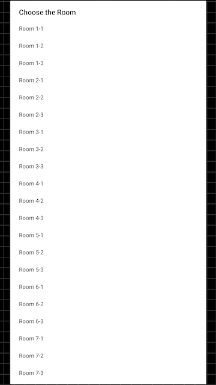
SELECT ROOM:
The stages in the editor are named rooms.
There are 21 rooms in total in the game to check and modify.
DISCLAIMER: Changing rooms makes you lose your stage layout modifications. Make sure to save and load your map before changing rooms to keep your modifications.
You can see the room number on the menu bar, but the rooms are also recognizable by the sprites on the canvas.
Here are the zones that the rooms represent:
RESET MAP:
The RESET MAP option allows you to clear the stage layout.
You can bring the original stage layout back by selecting the same stage room in the SELECT ROOM menu.
SAVE MAP:
When pressing SAVE MAP for the first time, you have to select a folder to determine the SonicJump subfolder directory, where your modified map files will be saved.
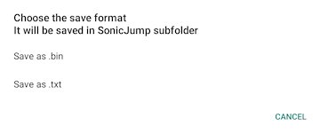
After selecting a folder directory, pressing SAVE MAP will ask you save your map as a .bin (map.bin) or .txt file (decoded_map.txt).
The map files don't overwrite, so anytime you save a map file, it creates another one. So make sure to track down your progress.
LOAD MAP:
Anytime you enter the Map Editor, it loads the regular game map by default. If you want to check your map, you have to load it.
To load your progress, press the LOAD MAP option and search for a map.bin or decoded_map.txt file located in the SonicJump subfolder. This folder is most probably located in the ⤓ DOWNLOAD folder of your internal device.
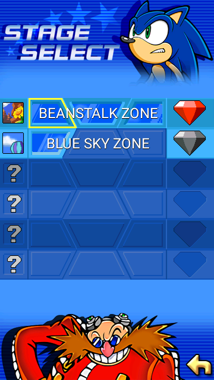
PLAY MAP:
After loading or saving your map, you can play and test it by pressing PLAY MAP.
This option will bring you to the Stage Select menu.
Select the corresponding stage to play your modified stage.
For example: if you have made your own stage in Room 1-1, you have to select the first stage of the game to play it.
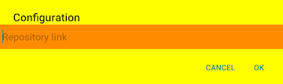
USER REPOSITORY:
The USER REPOSITORY option is used to read the config.ini file from the user repository, which contains the name of the user textures and graphics for the maps.
Insert the repository link and the Map Editor will load the custom graphics.
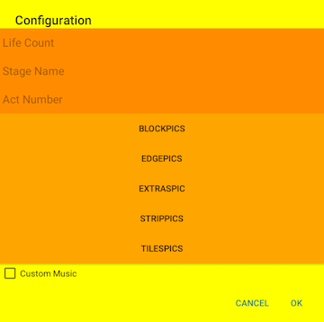
CONFIG MENU:
The CONFIG menu is where you can configure additional stage settings.
DISCLAIMER: The CONFIG menu doesn't track all configured settings after saving. Meaning that to make an additional modification, you have to configure all the settings again.
Here are the different settings available: